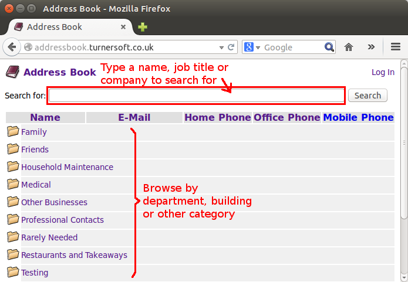
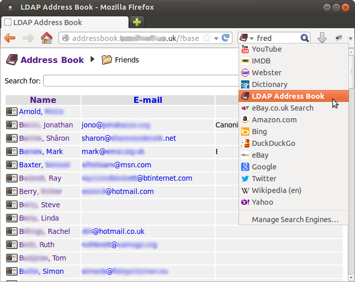
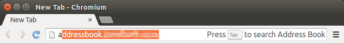
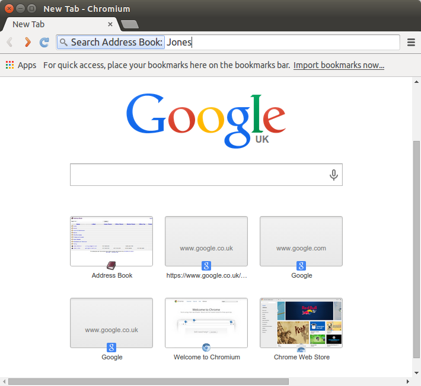
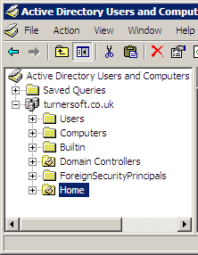
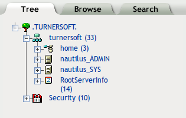
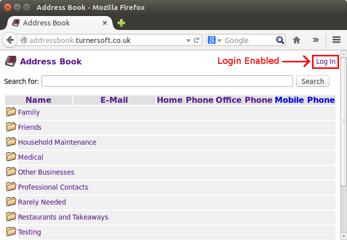
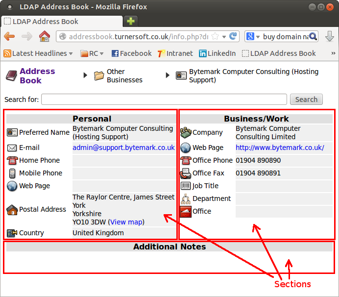

LDAP Address BookWeb-based LDAP address book browser/editor
|
|---|
LDAP Address Book is a web application for browsing and searching for contact details within an LDAP directory service, allowing it to be used as an address book. It has been tested on the following LDAP directories:
Searching your LDAP address book is pretty easy. Just type in the name, job title or company of who you're trying to find into search box and click "Search" (or press Return). Alternatively if the directory has been classified into "organisational units" (OUs) you can click on the folders underneath the search box to browse records by department, building, etc.

You can add the LDAP Address Book as a search engine in Firefox, Google Chrome/Chromium and other OpenSearch compliant web browsers, allowing you to search more easily.
To add the Address Book as a search engine in Firefox:

To add the Address Book as a search engine in Google Chrome or Chromium:
To search the Address Book, first enter the first few characters of the site URL, then press Tab when prompted.

Now enter the name you wish to search for.

The remainder of this document is aimed towards system administrators setting up and configuring LDAP address book on your network.
The general method of upgrading to a new version of the Address Book is to replace the application's program files with those from the new release.
In many cases your previous configuration (stored in file
config.php) can be reused with only minor changes
(if any). Details of what needs to be done for each version
can be found on the project Wiki:
https://sourceforge.net/p/ldap-addr-book/wiki/Home/
This information is available for version 0.10 onwards.
Install Apache HTTP Server, together with PHP and PHP/LDAP integration:
apt-get install apache2 php5 libapache2-mod-php5 php5-intl php5-ldap
Decide where you want to store the address book web site's files
and unpack the address book tar.gz file to the web site directory.
For the purposes of this guide, this location is assumed to be
/srv/www/addressbook.example.org and the URL of the
address book http://addressbook.example.org/, in
which case you might type:
mkdir -p /srv/www/addressbook.example.org cd /srv/www/addressbook.example.org tar xvzf ~/ldap-addr-book-0.02.tar.gz
Create the file
/etc/apache2/sites-available/addressbook.example.org
and add the following contents:
<VirtualHost *:80>
DocumentRoot /srv/www/addressbook.example.org
ServerAdmin webmaster@example.org
ServerName addressbook.example.org
ServerSignature email
DirectoryIndex index.html index.php
LogFormat "combined"
TransferLog /var/log/apache2/addressbook.example.org-access_log
ErrorLog /var/log/apache2/addressbook.example.org-error_log
</VirtualHost>
Enable the site by running the command:
a2ensite addressbook.example.org
Perform a graceful restart of Apache in order to re-read the configuration and make the new web site live:
apache2ctl graceful
Finally create a DNS record for the address book web site, e.g.:
addressbook.example.org. IN CNAME myserver
In outline, the procedure to set up the LDAP Address Book to run under Windows is as follows:
First, copy (or rename) the sample configuration file supplied with
LDAP Address Book, config.php.sample to config.php.
Open the file in your preferred text editor and change the following settings to tell the application where your Address Book data is stored:
$ldap_server - Specify the type, host name and
(optionally) port number of the LDAP directory server (domain controller)
to connect to.
$ldap_base_dn - Set to the location in the directory
(e.g. OU) that should be used as the "root" of the address book information.
See the Configuration Reference section below for further information on these and other settings.
Note: Windows users may experience problems opening the config.php
file using the default "Notepad" text editor. Try downloading and using
Notepad++ instead, which should
be able to open and edit the file correctly.
Some LDAP directory servers will allow limited read access without having to enter any user name or password (known as allowing "anonymous bind" access). If your directory is set up to allow this then you should be able to open the LDAP Address Book in your web browser and view its contents.
Note: Anonymous access may have very limited read permissions. Some attributes (e.g. telephone numbers) may appear blank unless you log in by name.
If anonymous access is not allowed then you'll get the message "Please log in to use the address book" when you open the LDAP Address Book in your web browser.
The LDAP Address Book will need at least one user login account on the directory service in order to access its contents. This can be either:
If you just want to get the LDAP Address Book up and running quickly, set
up a new user account that provides read-only access to your directory,
open the config.php in your preferred text editor and locate
the following section:
$ldap_server->add_user("__ANONYMOUS__",
array(
// LDAP login (or bind DN) to connect to the directory
//
// If the LDAP server is set up to allow "anonymous bind"
// then the the user name and password can be left blank,
// otherwise replace with a "generic" user that has read
// permission.
"ldap_dn"=>"",
"ldap_password"=>"",
// Permissions granted to anonymous users:
"allow_browse"=>true,
"allow_search"=>true,
"allow_view"=>true
));
Fill in the values of "ldap_dn" and "ldap_password" with the user account's DN and password. Once the details are correct you should be able to open the LDAP Address Book in your web browser and view its contents.
The section What is an LDAP distinguished name (DN)?
(below) gives more information about LDAP DNs and how to fill in the
ldap_dn setting correctly. It is also possible to configure
individual logging in with individual user names and passwords - see
Configuring Users and Permissions for more
information.
You'll need to use LDAP distinguished names (DNs) in a few places when configuring the LDAP Address Book:
This section gives a brief overview of what a DN is and how to find which DNs to use when configuring the Address Book.
LDAP records are organised into a "directory information tree" (DIT) of categories and subcategories - similar to how files and folders (directories) are stored on a computer's hard disc.
Each record in the directory is identified by it's name and location within the tree - known as its "Distinguished Name" or DN. A distinguished name consists of a comma-separated representing the "navigation path" through the tree to the object. Here's an example:
CN=John Doe,OU=Friends,O=BigCorp
Each item in the list is represented by an attribute and its value. In the above example:
The attribute used to identify each item varies according to its type, for example:
Here's how to work out the DNs from the graphical admin tools for Microsoft Active Directory and Novell eDirectory.
The Active Directory Users and Computers admin tool shows the LDAP directory tree in the left-hand panel of its window. Icons are used to represent the type of each object.

The top-level object shown in Active Directory Users and Computers
is the domain. The name of the domain is shown as a series of
elements separated by dots (e.g. turnersoft.co.uk),
however this is not the domain's LDAP distinguished name. Each element
of the domain name is represented as a separate domain component (DC)
in LDAP notation:
DC=turnersoft,DC=co,DC=uk
The second-level elements within the domain include organizational units (shown with a folder icon overlaid with a book/grey blob) and containers (shown as a folder icon without a book).
The DN of the "Home" organizational unit in the above screenshot is:
OU=Home,DC=turnersoft,DC=co,DC=uk
If you wanted the LDAP Address Book to show only the contents
of the "Home" organizational unit, you'd configure the
$ldap_base_dn setting (in config.php)
as follows:
$ldap_base_dn = "OU=Home,DC=turnersoft,DC=co,DC=uk";
Containers are similar to organizational units, but are named using their CN (common name) attribute. The DN of the "Users" container is:
CN=Users,DC=turnersoft,DC=co,DC=uk
Users are named using their CN (common name) attribute. For
example, the DN of the Administrator user for this domain
is
CN=Administrator,CN=Users,DC=turnersoft,DC=co,DC=uk
LDAP Address Book also allows you to specify an Active Directory
user by their User Principle Name (UPN), i.e. their user login name
followed by @ followed by the domain's DNS name (or
other allowed UPN suffix, if any have been configured). This
allows a user to be specified independently of its position in
the directory information tree.
The Administrator user for this domain has the UPN:
Administrator@turnersoft.co.uk
The iManager and ConsoleOne admin tools also show the LDAP directory structure as a tree of objects. As with Active Directory Users and Computers, icons are used to represent the type of each object.

The top-level object is the tree, which is not included in the LDAP DN. The DN of the "turnersoft" organization in the above screenshot is:
o=turnersoft
The DN of the "Home" organizational unit in the above screenshot is:
ou=home,o=turnersoft
Users are named using their CN (common name) attribute. For example, the DN of the "admin" user for this tree is:
cn=admin,o=turnersoft
The LDAP address book supports logging in with named user accounts. Typically, this is used by administrators who are permitted to edit the address book contents, or if you need to limit browsing/searching access to known users.
Once per-user access has been set up, users can log in with their own user names and passwords by clicking the "log in" link in the top-right corner of each page. (This link is not displayed if only anonymous access has been configured.)

User login names, passwords and permissions are taken from the LDAP directory itself rather than the address book application.
LDAP does not provide any (standard) way of retreiving a
user's permissions, so the $ldap_server->add_user()
configuration command should be used to tell the Address Book
which facilities should be made available to each user.
within the back-end directory.
Three types of user mapping can be defined:
The special user name __ANONYMOUS__ is used to specify the
LDAP credentials to be used and permissions to be given when nobody
is logged in by name. (If the __ANONYMOUS__ user is
not configured then all users will have to log in by name in order to
browse the directory. If it is used, the __ANONYMOUS__ user
should be given read-only access.)
The special login name __DEFAULT__ is used to specify the
permissions to be given when a user has logged in by name.
An individual user's login name can be assigned a different set of
permissions to those granted to __DEFAULT__.
This is typically used when setting up an "admin" user for the
address book.
The following settings can be applied to each user map entry in order to enable or disable various features of the address book. To use each feature, the necessary permissions will also need to be granted within the back-end directory.
| Setting | Description |
|---|---|
ldap_dn | Specifies the LDAP DN (or alternatively
the UPN when used with Active Directory) used to log in to the
directory. The token __USERNAME__ will be replaced
by the actual user name as typed into the login dialogue. If not
set then the Address Book will search for the user's DN automatically.
|
ldap_password | Specifies the password to
be used when connecting to the directory. This is only used for
the __ANONYMOUS__ user. |
allow_browse | Allows the user to browse through organisational units (folders) within the address book. |
allow_create | Allows the user to create new
records within the address book. They will also need to be granted
allow_edit in order to populate and save the new record's attributes. |
allow_delete | Allows the user to delete records within the address book. |
allow_edit | Allows the user to edit records within the address book. |
allow_edit_self | Allows the user to edit only their own record within the address book. |
allow_search | Allows the user to search the address book directory tree. |
allow_view | Allows the user to click on a record to see full details |
allow_export | Allows the user to save/export (individual) records as vCard electronic business cards. |
allow_export_bulk | Allows the user to export entire OUs of records (or the complete address book) in vCard format, for example to import into another address book or contact database that doesn't support LDAP directly. |
allow_folder_info | Allows the user to view
and (if allow_edit is also granted) edit folders, OUs and
other container objects. |
allow_login | Allows the user to log in to the directory. This permission is granted automatically if not specified explicitly. |
allow_ldap_path | Allows the user to see the location of the current entry in the "navigation path" at the top of the screen. This permission is granted automatically if not specified explicitly. |
allow_system_admin | Allows the user to see
LDAP server information (root DSE record) and access records other than
those under $ldap_base_dn. |
display_all_records_by_default | Displays a
list of all searchable records by default, rather than the objects
located directly under $ldap_base_dn. |
The following example shows how to grant all logged in users permission
to browse, search or view the Address Book (assuming the
__ANONYMOUS__ user has been disabled or removed from the
configuration):
$ldap_server->add_user("__DEFAULT__",
array(
"allow_browse"=>true,
"allow_search"=>true,
"allow_view"=>true
));
The following example shows how to allow only those users in a particular OU to log in to browse, search or view the Address Book:
$ldap_server->add_user("__DEFAULT__",
array(
"ldap_dn"=>"cn=__USERNAME__,dc=home",
"allow_browse"=>true,
"allow_search"=>true,
"allow_view"=>true
));
The following example shows how to grant additional permissions to a
specific user. The user name "admin" will be logged in using
with Active Directory UPN Administrator@example.org
(the default domain administrator).
$ldap_server->add_user("__DEFAULT__",
array(
"allow_browse"=>true,
"allow_search"=>true,
"allow_view"=>true,
"allow_folder_info"=>true
));
$ldap_server->add_user("admin",
array(
"ldap_dn"=>"Administrator@example.org",
"allow_browse"=>true,
"allow_search"=>true,
"allow_view"=>true,
"allow_create"=>true,
"allow_edit"=>true,
"allow_delete"=>true,
"allow_export"=>true,
"allow_export_bulk"=>true
));
Permissions granted to a user by name will be used instead of
the __DEFAULT__ permissions. In the above example,
admin will not receive the allow_folder_info
permission.
Permissions can be granted to an LDAP group using the
$ldap_server->add_group() configuration command. Members
of the group will receive the group's permissions. In the following
example, logged in users will receive permissions to browse, search
and view the Address Book. Users who are members of the
Address Book Admins are also granted permission
to create, edit and delete records.
$ldap_server->add_user("__DEFAULT__",
array(
"allow_browse"=>true,
"allow_search"=>true,
"allow_view"=>true
));
$ldap_server->add_group("cn=Address Book Admins,ou=HR,o=BigCorp",
array(
"allow_create"=>true,
"allow_edit"=>true,
"allow_delete"=>true
));
Alternatively, permissions can be granted according to LDAP group membership by specifying the group name as the permission's value. The following example shows how to use this method:
$ldap_server->add_user("__DEFAULT__",
array(
"allow_browse"=>true,
"allow_search"=>true,
"allow_view"=>true,
"allow_create"=>"cn=Address Book Admins,ou=HR,o=BigCorp",
"allow_edit"=>"cn=Address Book Admins,ou=HR,o=BigCorp",
"allow_delete"=>"cn=Address Book Admins,ou=HR,o=BigCorp"
));
Note:
__ANONYMOUS__ user.
The allow_login permission can be used to decide whether
users will be allowed to log in to the address book. It is automatically
granted if not explicitly defined. The following example shows how to grant
login permission based on group membership:
$ldap_server->add_user("__DEFAULT__",
array(
"allow_browse"=>true,
"allow_search"=>true,
"allow_view"=>true,
"allow_login"=>"cn=Address Book Users,ou=HR,o=BigCorp"
));
A specific user can be prevented from accessing the address book (whilst continuing to allow others to log in) by setting their "allow_login" permission to "false". For example, the following might be used to prevent the directory's top-level administrative account from being (mis)used to browse the address book:
$ldap_server->add_user("Administrator",array("allow_login"=>false));
The LDAP Address Book searches the directory in order to determine a user's DN during the login process.
By default, the Address Book will search for login user accounts
in the same area of the directory as the address book data
(i.e. under the location indicated by $ldap_base_dn). If you
wish to store the login accounts in a different location outside
of this area (e.g. for security reasons) then the setting
$ldap_server->dn_search_base can be used:
$ldap_server->dn_search_base = "CN=Users,DC=example,DC=org";
Searching is carried out using an anonymous connection
by default. The $ldap_server->dn_search_user
and $ldap_server->dn_search_password settings
can be used to specify a different account to use when searching
for a user's DN:
$ldap_server->dn_search_user = "CN=ldap-browse,OU=Service Accounts,DC=example,DC=org";
$ldap_server->dn_search_password = "foobar";
The fields/attributes that are used when searching can be customised
by editing the contents of $search_ldap_attrib
in the configuration file. The default setting is:
$search_ldap_attrib = array(
"cn","mail","sn","displayName","company","title");
...which searches the following set of attributes:
| Attribute | Description (typical usage) |
|---|---|
cn | Name of the directory entry itself (usually a person's full name or "common name") |
mail | E-mail address |
sn | Surname |
displayName | Perferred display version of user's name. Some users may prefer informal versions of their name (e.g. "Andy" instead of "Andrew"), which would be represented here. |
company | Company name |
title | Job title |
See your directory service's schema documentation for other attributes which are available to be searched.
The columns that appear in search results can be changed
by editing the contents of $search_result_columns in the
config file.
The special attribute sortableName can be used to display a
"sort-friendly" version of a personal name (Surname, Firstname)
where this information is available. (This is constructed from
the sn and givenName attributes if populated,
otherwise falling back to displayName and cn.)
Certain languages and countries have their own specific sorting
rules (e.g. the sequence in which alphabetic characters follow each other).
Where necessary, these rules can be selected through the
$lc_collate setting in config.php:
$lc_collate = "<language>[_<territory>][.<codeset>][@<modifier>]";
In practice neither the code set or modifier are widely used, and in most cases only the language and territory need to be defined, for example:
$lc_collate = "en_US";
(a code set of UTF-8 will be assumed automatically.)
If is possible to customise the LDAP queries which are used to fetch data from the directory, for example to display only records which have specific object classes or meet some other criteria.
Sites with Microsoft Active Directory/Exchange may wish to set up
custom filters that test the msExchHideFromAddressLists
and/or showInAddressBook attributes in order to exclude
those entries which are hidden from Exchange's Global Address Book
(GAL).
When the user browses through the directory tree directory, the
address book retrieves all records at the user's location
(LDAP base search) that match the criteria specified
by $browse_ldap_filter in config.php.
The default LDAP filter is as follows, which allows all
objects to be displayed:
$browse_ldap_filter = "objectClass=*";
Searches results are retrieved by carrying out an LDAP
subtree search from the root of the address book (as
specified in $ldap_base_dn). The expression to be searched
for is based on the value of $search_ldap_filter
in config.php. The default LDAP filter is as
follows, which limits search results to objects representing
people:
$search_ldap_filter = "(&(objectClass=person)___search_criteria___)";
The token ___search_criteria___ will be replaced with an
expression to search the attributes listed in $search_ldap_attrib
for the string entered by the user. For example if the user searched
for "smith", the token would be replaced by:
(|(cn=smith)(mail=smith)(sn=smith)(displayName=smith)(company=smith)(title=smith))
To allow all object types to appear in search results, including
organisational units (which typically do not have a cn
attribute set), make the following changes to config.php:
$search_ldap_filter = "___search_criteria___";
ou to the list of attributes to be searched
in $search_ldap_attrib.
You may want to customise the way in which address book entries are displayed - which fields/attributes are used and how they are laid out. If you wish, you can specify a different layout for each type of record.
As shipped, a default layout is provided which displays the address book entries in three "sections":

This layout is created by the configuration shown
below. The layout will be used when displaying
inetOrgPerson, user
or contact records.
Specifying * instead of a list of object
classes means that the layout should be applied for
all types of record (unless overridden by another
definition applying to a specific record type). The
layout itself is described as a comma-separated list
of arrays.
$ldap_server->add_display_layout("inetOrgPerson,user,contact",array(
array("section_name"=>"Personal",
"attributes"=>array(
array("givenName", "Given Name", "contact24.png","allow_view"=>false),
array("sn", "Surname", "contact24.png","allow_view"=>false),
array("cn", "Full Name", "contact24.png","allow_view"=>false),
array("displayName", "Preferred Name", "contact24.png"),
array("mail", "E-mail", "mail.png","allow_edit"=>false),
array("homePhone", "Home Phone", "landline-phone.png"),
array("mobile", "Mobile Phone", "cell-phone.png"),
array("wWWHomePage", "Web Page", "internet.png"),
array("streetAddress:l:st:postalCode", "Postal Address", "address.png"),
array("c", "Country", "country.png")
)
),
array("section_name"=>"Business/Work","width"=>"50%",
"attributes"=>array(
array("company", "Company", "company.png"),
array("url", "Web Page", "internet.png"),
array("telephoneNumber", "Office Phone", "landline-phone.png"),
array("facsimileTelephoneNumber", "Office Fax", "fax.png"),
array("title", "Job Title", "id.png"),
array("department", "Department", "org.png"),
array("physicalDeliveryOfficeName", "Office", "office.png"),
)
),
array("section_name"=>"Additional Notes","new_row"=>true,"colspan"=>2,
"attributes"=>array(
array("info")
)
)
));
The givenName, sn and cn
fields will not be visible except while the record is being edited.
The mail field will be read only, and cannot be edited
by end users.
Note: Some attributes must always be filled in with a value, for
example many LDAP directories require record types representing
a person to have the surname (sn) attribute filled
in. If you want to be able to create new records through
the Address Book then these attributes must be included
in your directory entry layout so that users can fill them in.
You can define the following settings for each section:
| Setting | Description | Default if not set |
|---|---|---|
section_name |
Title to appear above the section. | Title is not shown. |
new_row |
Whether or not this section should start on a new row. In the default setup the "Business/Work" section has "new_row"=>false set, so it is displayed to
the right of "Personal" on the same row. "Additional Notes"
has "new_row"=>false set, so appears on its
own row below the previous sections. |
Assumed to be false |
width |
Width of the section, specified as a number followed by
any of the following measurement units (which are those
supported by the CSS standard):
|
User's browser divides up the available width based on amount of data to be shown in each section |
colspan |
Number of HTML table columns that this section should span. In the default setup the "Additional Notes" section has "colspan"=>2 set, so spans the width of both
the "Personal" and "Business/Work" columns. |
Assumed to be 1 |
attributes |
List of attributes to appear in the section. | (always required) |
Each attribute is described by either three or four items:
A display field can be constructed from several LDAP attributes. To construct a field from multiple attributes, list the attributes in turn, separating them with one of the following symbols:
| Symbol | Meaning |
|---|---|
: | Separate attributes with a line break |
+ | Separate attributes with a space |
This facility is often used to display the lines of an address. (If the address attributes in your LDAP directory are used to store business addresses rather than personal addresses you may want to relocate the "Address" field from the "Personal" to the "Business/Work" section of the display.)
The following changes will be applied automatically:
Any web page URLs and e-mail addresses will be presented as clickable HTML links.
The postalCode attribute is followed by a
"View Map" link that displays the corresponding location
in Google Maps (provided that the postal code is valid and
recognised).
jpegPhoto,
thumbnailPhoto or thumbnailLogo attributes
will be scaled to the size indicated by $photo_image_size
in config.php (96x96 pixels by default). If this
value is not set then the images will be shown at their native
size.
More information about displaying images can be found in the following section.
By default, directory entries are displayed next to an icon representing their object class. Alternatively, the address book can be set to display an image - typically a photo or logo - representing the object instead. These images are retrieved from the following LDAP attributes (listed in order of priority):
| Attribute | Description |
|---|---|
jpegPhoto | Used to store one or more images of a person using the JPEG File Interchange Format. (Standard ref: IETF RFC 2798) In practice the Address Book will only display the first stored image. |
thumbnailPhoto | Stores a single thumbnail image, maximum size 100K. (Non-standard/Microsoft specific) |
thumbnailLogo | Stores a single thumbnail image, maximum size 32K. (Non-standard/Microsoft specific) |
The LDAP Address Book can also display PNG, GIF, WBMP, and GD2 images stored in these attributes, although JPEG is recommended in all cases. (WBMP is not the same thing as Microsoft Windows BMP, which is not supported.) Your PHP installation must have GD Graphics Library support enabled in order to display image attributes.
To display thumbnail photos/logos instead of "generic" icons,
set one or both of the following options in config.php:
| Setting | Description |
|---|---|
$enable_search_browse_thumbnail = true; |
Display thumbnail photos when browsing and in search results |
$enable_ldap_path_thumbnail = true; |
Display thumbnail photo in detail view navigation path |
Beware that setting $enable_search_browse_thumbnail = true
can result in slow page loading if there are a large number of
images to be displayed.
A larger version of these images can be shown on the entry's
detailed view by adding the jpegPhoto and/or
thumbnailPhoto to the display layout (as described
in the previous section). The following settings control the image
size:
| Setting | Default value | Description |
|---|---|---|
$thumbnail_image_size |
24x24 |
Size of thumbnail images displayed in search results and/or detail view navigation path, measured in pixels. For optimal layout the size should be the same as the icons used to represent object schema classes (24x24 as shipped). |
$photo_image_size |
96x96 |
Size of large images displayed in detail view, measured in pixels. Set this value to an empty string (or leave undefined) to disable scaling of these images. |
Android devices (at least as of version 4.4) will display the
logo in preference to the photograph wherever a contact record
includes both. To omit the logo from any records that have a photo
(so that the photo will be used) when saving as vCard, set the
following option in config.php:
$exclude_logo_if_photo_present = true;
Phone numbers appearing in the directory can be set to be displayed
as HTML links rather than plain text, usually so that the
number will be dialed when clicked on. The way that phone numbers
are converted into URLs can be configured via the
$phone_number_link_template setting in order to
support different types of "click-to-dial" software.
The following setting allows many mobile phone browsers and other platforms that have built-in phone support to dial a number when clicked on:
$phone_number_link_template = "tel:___phone_number___";
The following setting will enable phone numbers to be dialed
using Microsoft Skype or other software that handles the
(non-standard) callto: URI scheme:
$phone_number_link_template = "callto://___phone_number___";
The following settings show how to place a call by passing the phone number to a separate web application such as Cisco WebDialer:
$phone_number_link_template = "https://cucm01/webdialer/Webdialer?destination=___phone_number___";
$phone_number_link_target = "_blank";
If defined, the $phone_number_link_target setting
can be used to force the dialer application to open in a
separate window/tab.
The links shown in the page footer can be changed using the
$site_footer_links option in config.php.
The default set of links are defined as follows:
$site_footer_links = array(
array("url"=>"doc/","text"=>"User Guide"),
array("url"=>"https://sourceforge.net/projects/ldap-addr-book/",
"text"=>"Get Source Code")
);
Each link is represented by an array containing its URL and the name/label text to be displayed.
Note: The application's software license requires that you provide users with a means of obtaining a copy of the source code. As such you are recommended not to remove the "Get Source Code" link from the footer, although you may change it to a more appropriate URL where necessary (e.g. to a copy containing your own local changes, or if users have only limited connectivity to the external Internet that would prevent them from accessing the default location.)
Please see the license agreement for full information.
The appearance (such as font, text size, colours, etc) of the
address book is defined in the file styles.css.
Take a look at the stylesheet file
(styles.css)
You can change any of these settings (or add your own) by creating
your own stylesheet file, called styles_local.css and
adding your changes to it. (Although you could modify
styles.css directly it will be easier to upgrade to
future versions of the address book if you keep your changes
separate by using styles_local.css instead.)
The stylesheet file is made up of
selectors which specify which
part of the user interface is to be changed, followed by
style directives surrounded
by {...} to define how it should appear. For example, if you wanted to
dispay the address book in a different font you might add
the following to your own styles_local.css file and
change the font-family setting to your own choice of font:
body,table,textarea {
font-family:serif;
}
Where you don't redefine a setting in styles_local.css
(such as font-size:10pt in this example) the value
from styles.css will continue to be used.
The following table summarises the CSS selectors used within
styles.css and which part of the address book's
appearance they affect:
| CSS Selector | Typically used to change the font, size, colour, etc, of... |
|---|---|
body,table,textarea |
The address book as a whole. |
.ldap_navigation_path li:first-child |
The address book title, which is shown as the left-most item in the "Navigation Path" shown at the top of each page. |
.ldap_navigation_path li+li:before |
Organisational units, folders, etc, shown in the "Navigation Path" at the top of each page. The left-most element of the navigation path (typically used to show the address book title) is styled separately, described above. |
.page_footer |
Page footer. |
.ldap_entry_viewer_section .column_header, |
Column headers/titles used in search results and directory entries.(*) |
.ldap_entry_viewer_section td, |
Data displayed in search results and directory entries.(*) Note: The appearance of LDAP attributes can be customised individually, as described below. |
.ldap_entry_viewer_section th |
Name/label text that appears to the left of each attribute shown in a directory entry. |
(* These may be split into two separate style declarations if you want to customise the search results and directory entry detail pages separately.)
You can also change the way in which an individual LDAP attribute
is displayed by applying style directives to
.ldap_attribute_<attrib>,
where <attrib> is the attribute to be
customised.
For example, adding the following to
styles_local.css will cause home telephone numbers
(stored in the homePhone attribute) to be displayed
in italic:
.ldap_attribute_homePhone
{
font-style:italic;
}
As a further example, adding the following to styles_local.css
will display SSH public keys (stored in the sshPublicKey
attribute) to be displayed in a fixed-width font and word-wrapped more
appropriately:
.ldap_attribute_sshPublicKey
{
font-family:monospace;
word-break:break-all;
}
Country codes in LDAP directories normally follow the
ISO 3166 standard. The $country_code_standard setting
in config.php contains a comma-separated
list of which parts of the standard should be used by the
Address Book. By default, only the ISO 3166-1 alpha2 officially
assigned codes will be used:
$country_code_standard="official";
If your records use country codes for countries which have since been renamed or are no longer in existance, you may want to enable additional parts of ISO 3166, for example:
$country_code_standard="official,transitional,former";
This will enable the correct country names to be displayed, and for the older country codes to be selected from drop-down lists. The following table summarises the available country code standards:
| Country Code Setting | Description |
|---|---|
official |
ISO 3166-1 Officially Assigned Codes |
user |
ISO 3166-1 User-Assigned Codes
Country codes that have been reserved for organisations that use ISO 3166 to add further codes to their in-house implementations. Several of the more widely used/known country codes are listed by name. |
exceptional |
ISO 3166-1 Exceptional Reservations
Reserved at the request of national ISO member bodies. Usage other
than for the specific purpose which justified the reservation is
discouraged. (See comments against each exceptional reservation
in file |
transitional |
ISO 3166-1 Transitional Reservations
Former official ISO 3166-1 country codes, reserved against reassignment (typically for 50 years) whilst existing historical use are gradually phased out. These are also listed in ISO 3166-3 as former country codes. |
indeterminate |
ISO 3166-1 Indeterminate Reservations
International vehicle registration codes, reserved against reuse in ISO 3166-1 for an indeterminate period until existing historical uses have been sufficiently phased out. |
former |
ISO 3166-3 Formerly Assigned Codes Previously assigned ISO 3166-1 alpha2 codes for countries that are no longer in existance. |
The following alternative (non-standard) coding schemes are also supported if needed for specialist and/or legacy applications:
| Country Code Setting | Description |
|---|---|
wipo |
WIPO ST.3 Country Codes
Broadly similar to ISO 3166-1 alpha2 official assignments, but also includes codes which represent intellectual property organisations that participate in WIPO. Several countries which appear in ISO 3166-1 (2013 ed.) are omitted from WIPO ST.3 - most likely because they are not autonomous for patent treaty purposes or otherwise not recognised by WIPO:
ISO has agreed not to assign country codes which conflict with the
WIPO participants, so the Address Book can use both ISO and WIPO
standards together, e.g. by setting the country code standard to
(ISO have also agreed not to us "EF", which represented an older European patent treaty area, now superceded by "EP".) |
fips |
FIPS 10-4 Country Codes
Country codes used by the US Government and agencies prior to September 2008, when the standard was withdrawn and ISO 3166 adopted in its place. It's coding is substantially different from ISO 3166, and the two standards cannot be used meaningfully together. |
The schema is a set of information which the Address Book uses
to display and edit the different types of records. The schema information
is stored inside the Address Book's schema subdirectory.
The set of files that is loaded and used depends on the server type
and/or on additional entries in the configuration file. The default
set schema files used for each server type are:
| Server type | Schema configuration files used |
|---|---|
| ad | microsoft |
| edir | novell |
| openldap | core, cosine, inetorgperson |
| custom | (none) |
You can load an additional schema file using $ldap_server->add_schema()
from the configuration file. For example, the following commands will connect
to an OpenLDAP server and allow objects and enable the Mozilla Address Book schema
to be used (and displayed correctly) in addition to the defaults (core,
cosine and inetorgperson):
$ldap_server = new ldap_server("openldap","ldap.example.org");
$ldap_server->add_schema("mozilla");
The following schema files are supplied with the Address Book. (Future versions may include additional files.)
| Schema File | Description |
|---|---|
| core | Basic objects and attributes which make up the directory structure (such as definitions of person or surname). Adapted from on X.500 directory standards, described in IETF's RFC 2252 and RFC 2256. |
| cosine | Additional objects/attributes which were identified and adopted as a result of the COSINE (Co-operation and Open Systems Interconnetion in Europe) initiative's PARADISE directory pilot project in the early 1990s. Described in IETF RFC 1124 (and its successors). |
| dhcp | Allows the Address Book to be used to manage the Internet Software Consortium DHCP Server (dhcpd). This also allows a pair of DHCP servers to be set up as a failover cluster, sharing configuration and IP address lease data through an LDAP directory. |
| inetorgperson | Enhanced object class for recording details of a person in an "organizational context" (e.g. a member of staff) on an Internet/Intranet directory. Described in IETF RFC 2798. |
| microsoft | Objects and attributes used in Microsoft Active Directory ("AD"). These include redefinitions of Core, COSINE and inetOrgPerson (often with subtle differences) together with numerous Microsoft-specific classes. |
| mozilla | Extends inetOrgPerson for storing additional attributes used by the address book feature of Mozilla Thunderbird and related products. |
| nis | Allows the Address Book to manage a Network Information Service (NIS) server that has been set up to store its configuration data in LDAP. This is typically used for centrally managing UNIX/Linux-type operating systems on a network. |
| novell | Objects and attributes used in Novell eDirectory (formerly called Novell Directory Services, NDS). These include redefinitions of Core, COSINE, NIS and inetOrgPerson (often with subtle differences) together with numerous Novell-specific classes. |
| openldap | Versions of the organisation, OU and Internet/intranet organisational person objects with additional attributes, as used in the OpenLDAP Project's own directory schema. |
| oracle | Objects and attributes used to store information about Oracle databases
and services in a central directory. Oracle clients can look up this
information via LDAP instead of a locally-stored tnsnames.ora file
on each machine. |
| ppolicy | Defines objects for storing an LDAP directory's password policy within
the directory itself. Administrators of OpenLDAP servers can configure the
ppolicy overlay module to read these records and apply the policy
settings. |
| schac | Objects and attributes used to represent personal records in educational institutions (Schema for Academia). |
Unless configured otherwise, the Address Book will display unrecognised object and attribute classes as follows:
jpegPhoto,
thumbnailPhoto or thumbnailLogo attribute.)
Users will not be able to create new objects of this class.
This default behavior can be modifed and extended by defining the object or attribute class (or enabling a schema file that defines it).
The following example shows how to define a container object class
(similar to the one defined in the microsoft schema). The class
which should appear as a folder - similar to an OU - so that users can navigate
into it and see further objects inside. Users with allow_create
permission should be able to create container objects from within
the Address Book's user interface:
$ldap_server->add_object_class("container",array(
"icon"=>"folder.png",
"is_folder"=>true,
"display_name"=>"Container",
"can_create"=>true)
);
The following example defines sshPublicKey as a
multi-valued text attribute (data type text_list) intended
to hold a list of the user's SSH public keys.
$ldap_server->add_attribute_class("sshPublicKey",array(
"data_type"=>"text_list",
"display_name"=>"SSH Public Key")
);
Existing object and attribute classes can be deleted as follows:
delete_object_class($name); delete_attribute_class($name);
(The main use of this is to delete an existing class so that you can redefine it with different settings.)
The following settings can be used in object class definitions:
| Setting | Default | Description |
|---|---|---|
| icon | generic24.png | Filename of an icon image to appear next to objects of this class |
| is_folder | false | Whether the object class should be displayed as a folder |
| display_name | (class name) | Display name of the object class |
| can_create | false | Whether objects of this class can be created frmo within the address book |
| rdn_attrib | cn | Attribute which should be used as the RDN |
| required_attribs | (none) | Comma-separated list of attributes which are not permitted to be empty |
The attribute used in the object's name (the RDN attribute) must always have a value
and does not need to be listed in required_attribs.
The following settings can be used in attribute class definitions:
| Setting | Default | Description |
|---|---|---|
| data_type | text | Data type of this attribute (as per below) |
| display_name | (class name) | Display name of the attribute class |
The following values can be used in an attribute class's data_type setting
in order to indicate the type of data and how it should be displayed/edited:
| Data Type | Description |
|---|---|
| ad_group_type | Active Directory group type and scope (microsoft schema) |
| country_code | Country code |
| date | Date. |
| date_time | Date and time |
| dn_list | List of other objects in the directory, e.g. group members |
| gender | Gender |
| image | Image |
| phone_number | Phone number |
| postcode | Post code |
| text | Single line of text |
| text_area | Multi-line text value (e.g. notes) |
| text_list | List of text values |
| use_html_mail | Boolean, presented as a choice whether HTML mail is prefered (mozilla schema) |
| yes_no | Boolean, presented as a yes/no choice |
| Setting | Description |
|---|---|
$site_name | Site name, which appears in the
browser title bar. You may want to
customise this, e.g. with your company name.
Example: |
$site_footer_links | List of links that
appear in the footer of each page.
Example: $site_footer_links = array(
array("url"=>"doc/","text"=>"User Guide"),
array("url"=>"https://sourceforge.net/projects/ldap-addr-book/",
"text"=>"Get Source Code")
);
|
| Connection to LDAP Directory | |
$ldap_server |
Creates a connection to the LDAP server holding the address book
data. The following information needs to be provided about the server:
Examples: Active Directory-specific Options: (1) As an alternative to giving the name of a specific server (domain controller) you can specify just the domain name. This will load balance the connections across the available domain controllers. (See Microsoft KB 842197 for further information on how to use DNS netmask ordering for more fine-grained control of the servers used for load balancing.) (2) For multi-domain forests, specify the LDAP port number as 3268 in order to use the AD Global Catalogue. (By comparison, using the default LDAP port (389) will return incomplete information other than for the local AD domain.)
For further information, see: http://www.php.net/manual/en/function.ldap-connect.php |
$ldap_base_dn | Specifies the search base
within the directory which will be used for displaying the address
book. Rather than searching the whole directory, you can use this
option to restrict search results to only a specific part of the
directory tree which contains the user accounts or contacts.
Examples:
Syntax where one of the OU names contains a space: |
$ldap_server->dn_search_base |
Specifies the search base within the directory for looking
up a potential user's DN during the login process.
Example: |
$ldap_server->dn_search_user |
Temporary user name (bind DN) used by the address book software
to search the LDAP directory for a user's DN when logging in.
The corresponding password should be provided in
$ldap_server->dn_search_password.
Examples: If the directory is set up to allow read access without having to log on then just leave the user name and password blank (which will perform an "anonymous bind"). |
$ldap_server->dn_search_password |
Password corresponding to the account specified in
$ldap_server->dn_search_user, which is used by the
address book software to search the LDAP directory for a user's
DN when logging in.
Example: |
$ldap_server->add_user() |
Specifies the mapping between address book logins and the
back-end directory when per-user authentication is enabled.
(see Configuring Users and Permissions
for further information.)
This setting can be repeated for however many user mappings need are needed. Example: $ldap_server->add_user("__ANONYMOUS__",
array(
"ldap_dn"=>"CN=ldap-browse,O=example",
"ldap_password"=>"foobar",
"allow_browse"=>true,
"allow_search"=>true,
"allow_view"=>true
));
$ldap_server->add_user("__DEFAULT__",
array(
"allow_browse"=>true,
"allow_search"=>true,
"allow_view"=>true,
"allow_create"=>true,
"allow_edit"=>true,
"allow_delete"=>true
));(allows read-only access to anyone, log in by name in order to edit records) |
$ldap_server->follow_referrals |
Causes the address book to attempt to follow LDAP referrals.
Referrals are used where the contents of the LDAP directory are divided between several servers, with a different section of the directory stored on each. This is normally used only in larger organisations. A referral is a message which indicates that the requested information is stored on a different server. If follow_referrals
is set to true the Address Book will attempt to connect to
the other server to retrieve the information.
Beware: This feature is currently experimental. In Microsoft Active Directory, referrals are used where several domains have been joined into a "forest". As an alternative to using referrals, the LDAP Address Book can be set up to use the forest's Global Catalog (by connecting to an alternate LDAP service running on port 3268 - see description of $ldap_server above). Not all
attributes are stored in the Global Catalogue by
default - for example job titles and department information.
Missing attributes can be added to the Global Catalog
using the "Active Directory Schema" admin tool.
Example: |
| Search/Browse Directory Settings | |
$search_ldap_attrib |
This specifies which attributes (fields) get searched when a
user searches the address book. Add to the list if you have
specific requirements, e.g. if you want users to be able to
search on a department name (department) or building
(physicalDeliveryOfficeName).
Example: |
$search_ldap_filter |
Specifies the LDAP filter to be applied when searching
through records in the directory. The token
___search_criteria___ will be replaced with
an expression to search the attributes listed in
$search_ldap_attrib for the string entered by
the user.
Example: |
$browse_ldap_filter |
Specifies the LDAP filter to be applied when browsing
through records in the directory. This is normally set to
objectClass=*, which allows all records in
the directory to be displayed.
Example: |
$search_result_columns |
Specifies the column layout to be used for displaying
search results. Each column has three fields associated with it:
The special attribute $search_result_columns = array(
array("caption"=>"Name", "attrib"=>"sortableName", "link_type"=>"object"),
array("caption"=>"E-Mail", "attrib"=>"mail"),
array("caption"=>"Office Phone", "attrib"=>"telephoneNumber"),
array("caption"=>"Organisation", "attrib"=>"company")
);
The syntax |
$search_result_default_sort_order |
Specifies the default sort order for displaying search
results. User can change the sort order by clicking a column
header.
Example: |
$enable_search_suggestions |
Specifies whether search results from the directory
should be the "suggested" as the user types in
search terms. It may be more appropriate to disable this
facility in large installations in order to reduce
server load.
Example: |
$lc_collate |
Specifies the collation locale (sorting language/region/script)
to be used for browsing and displaying search results.
Example: |
$search_method |
Specifies the search result matching method to be used.
This setting is optional, included to allow users to restore
legacy search behavior should they wish. Allowed values
are:
Example: |
| Detailed Info View | |
$ldap_server->add_display_layout() |
Specifies the attributes to be shown in detailed entry view
and how they should be layed out. See the section "Changing the
layout and attributes shown for directory entries" above for
further information.
Example:
// Display information about a printer in Active Directory
$ldap_server->add_display_layout("printQueue",array(
array("section_name"=>"Shared Printer",
"attributes"=>array(
array("printerName", "Printer", "microsoft/printer24.png"),
array("location", "Location", "address.png"),
array("driverName", "Driver/Model", "generic24.png"),
array("description", "Description", "description.png")
)
),
array("section_name"=>"Capabilities","width"=>"50%",
"attributes"=>array(
array("printColor", "Color Printing", "generic24.png"),
array("printStaplingSupported", "Stapling", "generic24.png"),
array("printDuplexSupported", "Double-Sided Printing","generic24.png"),
array("printRate", "Printing Speed (PPM)", "generic24.png"),
array("printMaxResolutionSupported", "Max. Resolution (DPI)","generic24.png")
)
),
array("section_name"=>"Print Server","new_row"=>true,"colspan"=>2,
"attributes"=>array(
array("serverName", "Host Name", "microsoft/computer24.png"),
array("uNCName", "Printer UNC Path", "microsoft/domain24.png")
)
),
array("section_name"=>"Paper Available","new_row"=>true,"colspan"=>2,
"attributes"=>array(
array("printMediaReady")
)
)
));
|
| Photo/Image Display Settings | |
$enable_search_browse_thumbnail |
Specifies whether thumbnail images should be displayed next
to directory entries in browse/search results view
(if available) instead of object class icons.
Example: |
$enable_ldap_path_thumbnail |
Specifies whether thumbnail images should be displayed in
the detailed info view's "navigation path" (if available)
instead of object class icons.
Example: |
$thumbnail_image_size |
Size to which images should be scaled for use as
thumbnails/icons.
Example: |
$photo_image_size |
Size to which images should be scaled for display in
the detailed info view. Set to an empty string (or
leave undefined) to disable scaling of these
images.
Example: |
| Computer/Telephony Integration Settings | |
$phone_number_link_template |
Specifies if and how phone numbers should be displayed
as clickable links (e.g. to support "click-to-dial"
functionality). Leaving this setting blank (or not setting
it at all) will display phone numbers as plain text rather
than a link.
The token "___phone_number___" will be replaced with the actual phone number to be dialed. Examples: Enable click-to-dial support on many mobile phone web browsers:
Enable click-to-dial by calling Cisco WebDialer
running on host
|
$phone_number_link_target |
Specifies a value for a phone number link's "target" attribute.
It may be useful to set this to "_blank" for certain
click-to-dial software or if the address book is set up to run
inside a HTML frame.
Example: |
| Data Export Settings | |
$exclude_logo_if_photo_present |
Specifies whether logo images (from the
thumbnailLogo attribute) should be
omitted when exporting as vCard if a photograph is
also present. This may be useful when transfering
records from the Address Book to Android devices.
Example: |
| Date and Time Display Settings | |
$date_format |
Specifies the format/layout for displaying attributes
containing dates on an LDAP entry's "detailed info" page.
The following tokens (each consisting of
(information based on PHP manual) Example: |
$date_time_format |
Specifies the format/layout for displaying attributes
containing dates and times (timestamps) on an address book
entry's "detailed info" page.
See the description of
Example: |
$short date_format |
Specifies a more compact format/layout for displaying
attributes containing dates shown when browsing or searching
the address book.
See the description of Example: |
$short date_time_format |
Specifies a more compact format/layout for displaying
attributes containing dates and times (timestamps) shown when
browsing or searching the address book.
See the descriptions of Example: |
| Schema Configuration | |
$ldap_server->add_schema() |
Adds the contents of a schema file to the Address Book.
Example: |
$ldap_server->add_object_class() |
Adds a new object class to the schema.
Example: $ldap_server->add_object_class("container",array(
"icon"=>"folder.png",
"is_folder"=>true,
"display_name"=>"Container",
"can_create"=>true)
);
|
$ldap_server->add_attribute_class() |
Adds a new attribute class to the schema.
Example: $ldap_server->add_attribute_class("sshPublicKey",array(
"data_type"=>"text_list",
"display_name"=>"SSH Public Key")
);
|
$ldap_server->delete_object_class() |
Deletes an object class from the schema.
Example: |
$ldap_server->delete_attribute_class() |
Deletes an attribute class from the schema.
Example: |